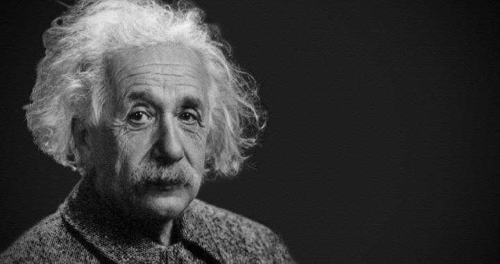

FOTO DE PERFIL

DATOS
Nacimiento: 14 de marzo de 1879, Ulm, Alemania
Fallecimiento: 18 de abril de 1955, Princeton, Nueva Jersey, Estados Unidos
Hijos: Eduard Einstein, Hans ALbert Einstein, Lieserl Einstein
Conyugue: Mileva Einstein (1903-1919), Elsa Einstein (1919-1936)
Estatura: 1.7m
SOBRE MI
Albert Einstein es quizá el científico mundialmente más conocido por el desarrollo de la Teoría de la
Relatividad que revolucionó la ciencia conocida hasta el siglo XX.
En 1921 obtuvo el Nobel de Física por sus explicaciones sobre el efecto fotoeléctrico e importante también fue
el descubrimiento del movimiento browniano, auspiciado por Robert Brown en 1820 pero que había quedado sin
explicación hasta entonces.
EDUCACION
-Doctorado en Fisica y Doctor en Filosofía
-Escuela Politécnica Federal de Zúrich
Ocupacion: Físico teorico, matematico, diplomatico y profesor
EXPERIENCIA
-En 1900, se graduó como profesor. Tomó un trabajo temporario como profesor en una escuela
-Para 1902, estaba trabajando en la oficina de patentes de nuevas invenciones. Trabajó en la oficina de patentes
por siete años.
-En 1909, pudo obtener un trabajo como profesor en la universidad. Continuó escribiendo sus ideas sobre física.
Sus ideas fueron tan buenas que recibió el premio Nobel de Física en 1921.
-1932 para trabajar en la Universidad de Princeton
IDIOMAS
-Aleman
-Latin
-Ingles
-Fances
-Italiano